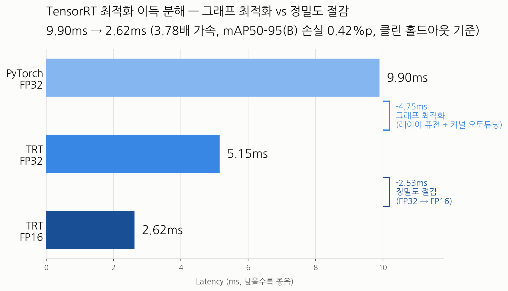

TensorRT 변환으로 추론 속도를 높이는 과정에서, 사용 중이던 검증셋 자체에 데이터 누수가 있다는 걸 발견하고 재구성했습니다.
PyTorch → TensorRT FP16 전환으로 9.90ms → 2.62ms (3.78배) 가속을 확보했습니다. 여기서 그래프 최적화(레이어 퓨전 + 커널 오토튜닝)와 정밀도 절감(FP32→FP16) 각각의 기여도를 분리 측정한 게 핵심입니다 — TRT FP32 지점을 따로 재지 않으면 이 둘이 하나로 뭉개집니다.

| 설정 | latency | mAP50-95(B) | 채택 |
|---|---|---|---|
| TRT FP16 | 2.62ms | 0.8324 | 채택 |
| TRT INT8 | 2.24~2.49ms | 0.7998 | 제외 |
※ mAP는 클린 홀드아웃(20,791장) 기준. INT8은 클린셋 기준 손실 3.26%p 대비 이득이 5~16% 범위로 불안정해 파이프라인에서 제외.
데이터셋 분할 스크립트가 클립(영상) 단위가 아니라 개별 프레임 단위로 무작위 분할되어 있었습니다. 같은 영상의 인접 프레임이 train/val에 걸쳐 배정되어, val 클립 238개 중 238개(100%)가 train에도 존재하는 완전한 누수였습니다.
| 지표 | leaky val | 클린 홀드아웃 | 차이 |
|---|---|---|---|
| mAP50-95(B) | 0.9408 | 0.8366 | -10.4%p |
| person | 0.983 | 0.947 | -3.6%p |
| dog | 0.898 | 0.727 | -17.1%p |
그럴듯한 설명을 세웠다가, 재검증해서 스스로 기각한 과정입니다. 이 부분을 포트폴리오에 남기는 사람은 거의 없지만, 검증 습관을 보여주는 가장 강한 근거라고 생각합니다.
--int8만 켜서
선택지가 {INT8, FP32}뿐이라 이런 오버헤드가 생긴 것 아닌가 하여 --int8 --fp16을
같이 켜서 재빌드했습니다. 결과: 속도는 개선(2.49→2.26ms)됐지만 mAP가 소수점까지 완전히
동일했습니다. 레이어별 dtype을 재집계하니 float16 텐서가 두 빌드 모두 0개 —
--fp16 플래그는 빌드 로그에 기록됐지만 실제로 어떤 레이어에도 적용되지 않았습니다.
가설 기각.
--int8만, --fp16 없이)으로 한 번 더 빌드해 재현성을
검증했습니다. v1(2.49ms)과 완전히 같은 설정인 v2가 2.24ms로 나왔습니다 — TensorRT 커널
오토튜닝의 빌드 간 변동성이었습니다. 공정성을 위해 FP16도 재빌드해 비교했더니
변동폭 1.5%(FP16) vs ~10%(INT8)로, 두 범위가 겹치지 않아 "INT8이 더 빠르다" 자체는
유지되지만 그 폭은 단일값이 아닌 범위로 표기하는 게 정확하다는 결론을 냈습니다.
실험 과정에서 쌓인 지식(dynamic ONNX 필수, task 메타데이터 유실, calibration 캐시는 배치별로 재사용 불가 등)을 CLI 스크립트로 정리했습니다. 특정 모델에 종속되지 않고 --model, --data 인자로 아무 YOLO 모델에나 바로 쓸 수 있습니다.
def main():
ap = argparse.ArgumentParser()
ap.add_argument("--onnx", required=True)
ap.add_argument("--out", required=True)
ap.add_argument("--precision", choices=["fp32", "fp16", "int8"], default="fp16")
ap.add_argument("--batch", type=int, default=1,
help="고정 batch profile. ONNX가 dynamic batch로 "
"export돼 있어야 함")
ap.add_argument("--calib-cache", default=None,
help="다른 배치 크기로 재사용 시 그래프 최적화 경로가 "
"달라져 빌드가 실패할 수 있음 - 배치별로 재보정할 것")
args = ap.parse_args()
shape = f"images:[{args.batch},3,640,640]"
cmd = ["polygraphy", "run", args.onnx, "--trt",
"--save-engine", args.out,
"--trt-min-shapes", shape, "--trt-opt-shapes", shape,
"--trt-max-shapes", shape]
if args.precision == "fp16":
cmd.append("--fp16")
elif args.precision == "int8":
cmd += ["--int8", "--data-loader-script", "calibration_loader.py"]
if args.calib_cache:
cmd += ["--calibration-cache", args.calib_cache]
subprocess.run(cmd, check=True)전체 코드: ev_auto_pipeline/benchmark/ — export_onnx.py, build_engine.py, benchmark.py, evaluate.py, calibration_loader.py, check_split_leakage.py